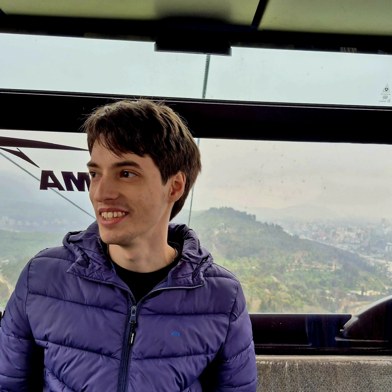

About
This two-day regional NLP school, organized right after ECI 2026, is a joint effort between the Instituto de Investigación en Ciencias de la Computación (ICC, CONICET-Universidad de Buenos Aires), Argentina; the Natural Language Processing Group at Instituto de Computación (Facultad de Ingeniería, Universidad de la República), Uruguay; and the Natural Language Processing Group at Facultad de Matemática, Astronomía, Física y Computación (Universidad Nacional de Córdoba), Argentina.
The school will feature lectures by NLP researchers, tutorials and poster sessions, focused on Natural Language Processing and its applications in Artificial Intelligence.
The target audience includes graduate and undergraduate students in NLP-related fields, researchers, industry professionals, and anyone interested in Natural Language Processing and Artificial Intelligence.
Participation is subject to limited capacity and may require a selection process if applications exceed the available spots. Participation is free of charge, with a strong commitment to accessibility for students and researchers from the region. A limited number of small financial support grants will also be available to help support the participation of students traveling from other regions.
The initiative seeks to strengthen the Latin American AI ecosystem by creating opportunities for interaction, learning, and collaboration in a region where in-person exchange opportunities are often limited. It aims to bring together students, researchers, and professionals from different countries to foster regional connections, facilitate the exchange of ideas, and support collaborative work in NLP and related areas.
Registration Closed
If you are interested in attending our school, please fill out this form. Please check the important dates for the application deadline. Applications will be reviewed and selected according to available capacity.
Watch online: Talks and the panel can also be followed virtually. Open the corresponding talk or panel below to find its live-stream link.
Schedule
Talks and panel: Aula Magna, Pabellón I. Open in Google Maps
Tutorials: Room 1109, Pabellon 0, located next to Pabellon I.
| Lunes 3 de agosto | Actividad | Martes 4 de agosto | Actividad |
|---|---|---|---|
| 8:45–9:20 | Acreditación y retiro de credenciales | 9:00–9:30 | Acreditación y retiro de credenciales |
| 9:20-9:30 | Palabras de apertura. Juan Pablo Galeotti y Viviana Cotik. | ||
| 9:30–10:30 |
Charla — Equidad y sesgo en modelos de visión y lenguaje Enzo Ferrante DescripciónEsta charla presenta una visión general de mi trabajo sobre equidad, sesgos y evaluación en modelos modernos de visión y lenguaje, basado en investigaciones realizadas en el ámbito de las imágenes médicas, los sistemas multimodales y los grandes modelos de lenguaje. Comienzo analizando cómo los desequilibrios demográficos en los conjuntos de datos de imágenes médicas (en particular, en grandes colecciones de radiografías de tórax) dan lugar a disparidades sistemáticas y clínicamente relevantes en el rendimiento entre distintos grupos de pacientes según sexo y otras características, lo que motiva esfuerzos más amplios hacia una inteligencia artificial confiable y responsable en salud, como se refleja en guías tales como FUTURE-AI. Luego abordo los sesgos implícitos en los grandes modelos de lenguaje, con especial foco en su impacto sobre las poblaciones transgénero en contextos relacionados con la salud: si bien los modelos suelen manifestar explícitamente comportamientos no discriminatorios, las pruebas de asociación de palabras y de sesgo en la toma de decisiones revelan la presencia de sesgos implícitos consistentes tanto en inglés como en español. Finalmente, examino el sesgo entre modalidades en modelos de visión-lenguaje, donde las interacciones entre las representaciones visuales y textuales pueden dar lugar a resultados inesperados en tareas como la caracterización de enfermedades (disease phenotyping) y la generación de informes radiológicos, con consecuencias potencialmente relevantes para grupos históricamente marginados, como los pacientes transgénero. |
9:30–11:00 |
Panel — ¿Somos pasado? El impacto de la IA en la profesión de desarrollador/a de software Monica Bobrowski, Agustín Mosteiro, Nicolás D'Ippolito, Fernando Schapachnik Ver en línea |
| 10:30–11:30 | Coffee Break + Sesión de pósters 1 | 11:00–11:30 | Coffee Break + Sesión de pósters 2 |
| 11:30–12:30 |
Charla — De la simple fusión a las nuevas fronteras: una introducción a la IA multimodal Valentín Barriere DescripciónEsta charla introduce el aprendizaje automático multimodal para un público de NLP: cómo los modelos combinan señales de distintas modalidades, cómo podemos medir y modelizar formalmente qué comparten realmente las modalidades entre sí, y cómo tratar las modalidades como tokens de un grande modelo de lenguaje. Recorreremos este arco a través de algunas de las arquitecturas que lo definieron, para luego adentrarnos en un territorio menos convencional: modalidades que llevan la definición habitual de “multimodal” más allá del texto, la imagen y el audio. La charla cierra con un par de ejemplos concretos de investigación en curso que aplican estas ideas en la práctica. |
11:30–12:30 |
Charla — ¿Cuán confiable es esta respuesta? Medición de incertidumbre para grandes modelos de lenguaje Luciana Ferrer DescripciónDurante el uso de sistemas de inteligencia artificial, tener acceso a una medida de la incertidumbre sobre la respuesta generada permite a los usuarios tomar decisiones informadas sobre aceptar o rechazar una respuesta del sistema en función de costos específicos para su aplicación. Esto es especialmente importante en aplicaciones de alto riesgo, donde una respuesta incorrecta puede tener graves consecuencias. En esta charla voy a describir varios métodos para la generación de puntajes de incertidumbre, las métricas usadas para su evaluación y diversas maneras de usar estos puntajes en la práctica. |
| 12:30–14:00 | Almuerzo + continuación de la sesión de pósters 1 | 12:30–14:30 | Almuerzo + continuación de la sesión de pósters 2 |
| 14:00–15:15 |
Tutorial — Evaluación sociocultural de modelos de lenguaje Luciana Benotti, Guido Ivetta DescripciónEste taller teórico-práctico aborda la evaluación de sesgos sociales, estereotipos y el uso de expresiones típicas locales en modelos de lenguaje. Examinaremos cómo los modelos de lenguaje asocian atributos a diferentes identidades, apoyándonos en investigaciones de nuestro equipo en la Universidad Nacional de Córdoba. Analizaremos los datos recolectados durante la misma sesión, pondremos a prueba experimentos de evaluación empírica y exploraremos cómo responden los modelos ante frases propias de nuestra región, investigando si estas particularidades lingüísticas y culturales se convierten en una fuente de alucinaciones. |
14:30–15:45 |
Tutorial — Epentreniamiento de grandes modelos de lenguaje Guillermo Moncecchi, Ignacio Sastre DescripciónEn este taller teórico-práctico veremos cómo construir y entrenar un modelo de lenguaje decoder-only con arquitectura Transformer para resolver una tarea particular, bastante rioplatense, partiendo de ejemplos disponibles. Presentaremos primero los conceptos fundamentales para la construcción y entrenamiento de redes neuronales y cómo se implementan en PyTorch, para luego diseñar y entrenar el modelo de lenguaje elegido desde cero. Analizaremos el modelo construido y veremos cómo se expresan algunas características del mecanismo de atención en sus pesos. |
| 15:15–15:45 | Coffee Break | 15:45–16:15 | Coffee Break |
| 15:45–17:00 | Continuación del tutorial | 16:15–17:30 | Continuación del tutorial |
Poster Session
Throughout the two days, posters covering different research areas in NLP will be presented. Posters on related topics are grouped together and assigned consecutive order numbers. Each poster will be displayed on its corresponding day along with its number, allowing you to plan in advance which posters you would like to visit.
Poster Session Day 1
| Order | Presenter | Poster title |
|---|---|---|
| 1 | Stephanny Gabriela Sánchez Bautista |
Empowering Marginalized Communities via Low-Resource Language Interfaces: A Domain-Specific RAG Approach for Household MaintenanceTechnical maintenance knowledge remains largely inaccessible to non expert users in the Global South due to high costs and linguistic barriers, disproportionately affecting women and leading to premature electronic waste. We propose an intelligent multimodal framework that leverages Language Understanding and Retrieval-Augmented Generation (RAG) to democratize household appliance repair. To ensure inclusivity for populations where oral tradition and indigenous languages prevail, we integrate a low-resource speech interface designed to support Quechua and colloquial Peruvian Spanish. Our system enables users to describe appliance failures, specifically microwave ovens—via text and voice, which are then processed through a pipeline of multilingual BERT-based embeddings and FAISS vector search.We introduce a multi-model evaluation pipeline comparing four architectures: distiluse-base-multilingual, paraphrase-multilingual-MiniLM, sentence-similarity-spanish, and mpnet-base under identical conditions. A domain-specific fine-tuning strategy was applied to a curated dataset of 1,000 annotated failure cases, reflecting formal, technical, and colloquial registers. Experimental results demonstrate that the fine-tuned model achieves a gain in precision, accuracy and MRR scores, with a query latency under 100ms. By bridging advanced RAG architectures with low-resource speech capabilities, this work empowers marginalized communities to perform safe repairs, fostering both linguistic inclusivity and circular economy practices in real-world, multilingual contexts. |
| 2 | Paola Cúneo |
Lengua qom: Creación de un corpus de habla y de texto paralelo, sus aplicaciones y evaluaciónLas lenguas indígenas constituyen un componente fundamental del entramado cultural y lingüístico de las comunidades que las hablan y de nuestro país. Sin embargo, muchas de estas lenguas enfrentan procesos de desplazamiento lingüístico y una limitada disponibilidad de recursos digitales que contribuyan a su documentación y fortalecimiento. En este contexto, la construcción de corpus lingüísticos digitales representa una herramienta valiosa tanto para potenciar el estudio de estas lenguas como para desarrollar tecnologías del lenguaje. En este trabajo presentamos los avances en la construcción de un corpus de habla y texto en lengua qom, orientado al desarrollo de recursos y tecnologías que contribuyan a su uso, fortalecimiento y continuidad. En su estado actual, el corpus reúne aproximadamente 5 horas de grabaciones de habla de alta calidad, de las cuales 3 horas han sido transcriptas en qom y traducidas al español. Asimismo, presenta una amplia diversidad sociolingüística en términos de género, edad, variedad dialectal, así como de géneros discursivos y estilos de habla. Se describen las características del corpus y la metodología empleada para la recolección y anotación de los datos, incluida la labor colaborativa desarrollada junto con la comunidad indígena. Finalmente, se analizan los principales desafíos enfrentados durante el proceso y las perspectivas de utilización del corpus en futuras aplicaciones de procesamiento del lenguaje natural y tecnologías del habla. |
| 3 | Macarena Fernandez Urquiza |
Evaluation Metrics for Qom↔Spanish Machine Translation: Baselines, Limitations, and a RoadmapEvaluating machine translation for low-resource Indigenous languages poses challenges that standard n-gram-based metrics are not designed to handle: polysynthetic morphology, non-standardized orthography, and scarce digital resources. The first shared task on translation metrics for Indigenous languages, held at the AmericasNLP 2025 workshop, showed that ChrF++—the current standard—correlates poorly with human judgments for these languages (average Pearson correlation ~0.52 across three languages), while the best neural approaches reach ~0.67, revealing both the potential and the limitations of existing methods. This work extends the investigation to the Qom↔Spanish pair. Qom is a Guaycuruan polysynthetic language of northern Argentina with orthographic variation and still-emerging digital resources. An existing translation model (fine-tuned NLLB) is evaluated using n-gram metrics (BLEU, ChrF++) and pretrained multilingual embedding-based metrics (BERTScore, MoverScore), and cases where metrics diverge from actual translation quality are qualitatively analyzed. Building on these findings, an annotation guideline is proposed, adapted to the linguistic and sociocultural specificities of Qom—following the semantics/fluency evaluation methodology of the AmericasNLP shared task 3 —alongside a roadmap toward embedding-based metrics trained on the Qom-Spanish pair. |
| 4 | Ignacio Giuliano Iannello |
Evaluación de la Comprensión Semántica en la traducción de LSA-TEl Lenguaje de Señas Argentino (LSA) tiene características que lo diferencian de otros lenguajes de señas como el lenguajes de señas americano (ASL) o el lenguaje de señas chino (CSL) las cuales tienen diferencias tanto en el significado de diferentes gestos como tambien asi en su estructura gramatical (El LSA utiliza Objeto-Sujeto-Verbo mientras que ASL usa Sujeto-Verbo-Objeto). En nuestro país alrededor de 70.000 personas se comunican a través del lenguaje de señas. Esto es un indicador de la importancia de adaptar o generar instrumentos que puedan ser traducidos satisfactoriamente. Bratti[1] presenta un modelo entrenado en LSA-T que reporta un BLEU-1 de ~9%. Testa et al. [2] pusieron a disposición un pipeline automático para generar un benchmark que evalúa para los datasets PHOENIX y CSL-Daily. El poster propuesto mostrará los resultados de reproducir el pipeline propuesto por [2] para un modelo entrenado en LSA-T, centrado en la evaluación de la precisión de Comprensión de Lenguaje de Señas (Sign Language Understanding). [1] Bratti, Juan “Traducción de secuencias de la lengua de señas argentina mediante visión por computadora”, Tesis de grado, FAMAF, UNC. Dic 2025, https://rdu.unc.edu.ar/items/26462320-e56d-40f2-a4cf-877bc67be5d7 [2] Zeno Testa, Antonino Furnari, Lorenzo Baraldi, and Natalia Díaz-Rodríguez, "SLU-2K: A Question-Based Benchmark for Semantic Evaluation of Sign Language Translation".https://arxiv.org/abs/2606.03788v1 |
| 5 | Tadeo Kaufmann |
De España al Río de la Plata: brecha dialectal y benchmarks NLU para el español rioplatenseEl español rioplatense, hablado por más de 45 millones de personas en Argentina y Uruguay, está prácticamente ausente de los benchmarks de comprensión del lenguaje natural. Los modelos entrenados en español estándar peninsular no han sido evaluados sistemáticamente en esta variedad, y la evidencia sugiere que la distancia dialectal tiene costos reales en rendimiento. Presento dos contribuciones: XNLIrp, la primera adaptación del benchmark XNLI al español rioplatense (7.500 instancias,validadas por 339 anotadores nativos con 84,2% de aprobación), y QA-Cuentos ET, el primer dataset de selección de oraciones respuesta en rioplatense (8.940 instancias) construido sobre el corpus de eye-tracking Cuentos ET. Con estos recursos evaluamos la brecha dialectal en BETO y mDeBERTa en tres condiciones (ES→ES, ES→RP, RP→RP) y a su vez analizamos si las señales de eye-tracking de lectores nativos rioplatenses mejoran el rendimiento en esa variedad. |
| 6 | Juan Miguel Vásquez Aguilar |
PyPodcast: A Python Library for Computational Conversational Analysis of PodcastsSiguiendo el trabajo de Zhang et al. (https://aclanthology.org/P18-1125.pdf), presentamos esta biblioteca de Python que permite realizar análisis conversacional de podcasts. La biblioteca permite descargar episodios de audio de fuentes abiertas, generar transcripciones de los episodios, asignar etiquetas de participantes a cada turno en las conversaciones, generar diversas características para analizar fenómenos sociolingüísticos a partir de datos conversacionales, obtener métricas del corpus, así como asignar distintas etiquetas de sentimiento y polaridad. La biblioteca esta optimizada para correr secuencial o paralelamente en ambientes con uno o múltiples GPUs (Nvidia y Apple Silicon). |
| 7 | Nicolás Rubinstein |
Nexo-Memoria: un grafo de conocimiento para la Memoria, Verdad y JusticiaSe trata de un grafo de conocimiento que modela información extraída de sentencias judiciales por crímenes de lesa humanidad cometidos durante la última dictadura cívico-militar en Argentina (1976–1983). La información se extrae mediante un pipeline de extracción con LLMs y componentes determinísticos en múltiples pasos. El dominio presenta desafíos específicos para el NLP: normalización de expresiones temporales y espaciales imprecisas en español, resolución de entidades y coreferencia cross-documento, extracción de información en textos jurídicos extensos, y confiabilidad de las extracciones con trazabilidad a la fuente. La solución se apoya en una ontología propia diseñada para ser interoperable con otras fuentes de información, una arquitectura de grafo híbrido (RDF + Neo4j) que separa la fuente de verdad semántica de la proyección operacional, y un agente conversacional que traduce preguntas en lenguaje natural a consultas SPARQL y Cypher. Cada tripleta preserva trazabilidad a nivel de fragmento hasta el documento fuente, y una interfaz de revisión permite a expertos del dominio validar y corregir los datos extraídos. |
| 8 | Adrián Fernando Acarapi Roca |
Evaluación dinámica de una arquitectura multi agentes bajo logica difusaEl presente trabajo busca evaluar y modelar matemáticamente el uso eficiente de comunicación entre agentes para la segregación óptima de responsabilidades, entre una arquitectura on premise y modelos corriendo en la nube para determinar la eficacia de un cambio dinámico de responsabilidades bajo la lógica difusa |
| 9 | Lesly Zerna |
Optimización de Agentes basados en Modelos Abiertos: Un caso de estudio con GemmaEl despliegue de sistemas basados en agentes de Procesamiento del Lenguaje Natural (PLN) en entornos de producción enfrenta desafíos críticos de ingeniería que rara vez se abordan en la literatura introductoria: la latencia de inferencia, la acumulación de estado en el contexto y las restricciones en el manejo de dependencias de texto estructurado. Este trabajo presenta un estudio de caso práctico centrado en el diseño y la optimización de un sistema multi-agente utilizando la familia de modelos lingüísticos abiertos Gemma. Evaluamos el impacto de diferentes patrones de orquestación y arquitecturas de enrutamiento sobre el tiempo de respuesta y la eficiencia en el consumo de tokens en tareas complejas de procesamiento de texto. Adicionalmente, analizamos estrategias de gestión de estado mediante la compresión y poda del historial de conversación para mitigar la saturación del contexto. El objetivo es demostrar cómo la transición de prototipos educativos a arquitecturas robustas de PLN puede lograrse utilizando modelos de código abierto viables, locales y eficientes, proporcionando un marco de referencia reproducible y de bajo costo para desarrolladores e investigadores de la región. |
| 10 | Favio Di Ciocco |
Propagation of correlated rumors in a threshold modelSocial media platforms bombard users with vast amounts of information, often exceeding individual cognitive processing capacities. In contexts where forming an informed opinion is costly, individuals tend to rely on social reinforcement, validating information only if it is confirmed by their local environment. In this work, we study the propagation of unverified information (rumors) in complex networks, focusing on a scenario with two competing rumors regarding a single topic: one positive and one negative. We introduce a mechanism where these rumors are correlated, such that the adoption of one facilitates the adoption of the other. However, since the rumors represent opposing views, agents who accept both encounter a state of cognitive dissonance. This conflict is eventually resolved by discarding both beliefs and adopting a stricter criterion (higher threshold) for accepting future information. Our model revealed two distinct parameter regions: one where a single rumor dominates, and another where most agents become skeptical. A proposed dynamical description, when integrated, showed similar behavior to the original model. |
| 11 | Giuliano Crenna |
El indice V para la evaluación ecológica de los grandes modelos del lenguajeEl poster trata sobre el desarrollo de un indicador para evaluar integralmente el impacto ecológico en la fase de decoding de un modelo del lenguaje. |
| 12 | Eric Lützow Holm |
Casa o árbol: una propuesta lúdica para acercarse al NLPEn este trabajo presentamos “Casa o árbol”, una actividad lúdica diseñada para introducir de forma intuitiva y visual los conceptos de embeddings y distancia semántica en estudiantes de último año de nivel secundario. El juego consiste en juntarse en grupos y adivinar una palabra secreta mediante una cadena secuencial de opciones binarias (ej. de "casa o árbol" a "árbol o gato" hasta aproximarse al objetivo). Utilizando los datos recolectados por los propios alumnos en un formulario online, programamos en vivo para mapear las partidas computando los embeddings de las palabras jugadas. Esto nos permite generar gráficos que muestran cómo la distancia semántica tiende a decrecer a lo largo de los turnos. Asimismo, analizamos el impacto del priming léxico mediante la lectura de un cuento corto previo al juego, evidenciando estadísticamente cómo las palabras de ese texto condicionan el vocabulario de los estudiantes empleado en las partidas. |
| 13 | Patricio Gerpe |
Activación Endógena mediante Homeostasis Epistémica en Sistemas Multi-Agente Basados en LLMsLos sistemas multi-agente basados en modelos de lenguaje (LLMs) tienden a perder coherencia a medida que la interacción se extiende, un fenómeno conocido como colapso de contexto que, en entornos de debate rebatible, invalida el debate. Los marcos de trabajo contemporáneos (como AutoGen, MetaGPT o LangGraph) mantienen una activación exógena: el momento en que habla cada agente se decide por fuera de su estado interno, desacoplando la activación de la presión epistémica que el agente acumula. La biología sugiere una alternativa: las variables internas acumulan tensión, gatillan una respuesta y regresan al equilibrio sin una instrucción externa (homeostasis). En este trabajo presentamos una estrategia de orquestación endógena bio-inspirada donde cada agente gestiona un déficit epistémico interno ($\delta_i$) que aumenta de forma constante durante los periodos de inactividad y se reduce inmediatamente después de realizar una contribución lingüística útil; una función sigmoide transforma esta tensión en una probabilidad de acción. Formalizamos este marco a través de los Axiomas de Autonomía Homeostática (AAH) y presentamos un diseño experimental orientado a aislar el comportamiento del modelo puramente homeostático frente a ruteadores tradicionales de LangGraph en debates de texto. Nuestros resultados preliminares muestran que la activación endógena pura logra mitigar la monopolización del piso conversacional, distribuyendo los turnos de habla de manera orgánica sin requerir las complejidades asociadas a mecanismos de aprendizaje por refuerzo. |
Poster Session Day 2
| Order | Presenter | Poster title |
|---|---|---|
| 1 | Carlos Israel Jimenez J |
Apu: procesamiento privado de datos clínicos sensibles mediante cifrado homomórfico (FHE)Este póster presenta Apu (Sensible Data Guardian), un prototipo desarrollado durante el Aleph Hackathon (2.º lugar) que explora una pregunta cada vez más relevante para la IA: ¿cómo procesar datos clínicos altamente sensibles sin exponerlos? La propuesta usa cifrado homomórfico completo (FHE) para realizar cálculos e inferencias directamente sobre datos cifrados, de modo que la información sensible nunca se descifra durante el procesamiento. Al tratarse de un proyecto de hackathon, Apu es una prueba de concepto más que un sistema validado: el objetivo del trabajo fue demostrar la viabilidad de la idea y mapear sus límites prácticos. El póster muestra la arquitectura del prototipo, las restricciones reales del FHE que encontramos (costo computacional y tipos de operaciones factibles), y discute su potencial relevancia para América Latina, donde la protección efectiva de datos personales sigue siendo un desafío. Finalmente, se plantean las preguntas abiertas y los posibles caminos para extender este enfoque hacia el procesamiento de lenguaje sobre texto clínico. |
| 2 | Sofía Martinelli |
Tensions Between Biomedical Ethics Review and Responsible AI Research at a University Hospital in South AmericaThis paper analyzes ethical and technical challenges of implementing Responsible LLMs in clinical settings, drawing on an ongoing interdisciplinary project in Uruguay. The project is being developed within the Centro Interdisciplinario en Ciencia de Datos y Aprendizaje Automático (CICADA, Universidad de la República) in collaboration with the Hospital de Clínicas, Uruguay’s main university hospital. The regional research team draws on expertise from computer science, medicine, and the social sciences to address questions about fairness, inclusion, and gender bias in AI systems. |
| 3 | Margarita Ruiz Olazar |
Clasificación Automática de Diagnósticos de Salud Mental en Texto Clínico Libre mediante RigoBERTa Clinical: Depresión vs AnsiedadEn salud mental, las condiciones como la depresión y la ansiedad son las más prevalentes y representan un gran desafío para los sistemas de salud pública a nivel mundial. Actualmente, con el avance de la tecnología en muchas instituciones de salud, el registro electrónico (EHR) de las consultas clínicas se realiza en formato de texto narrativo. Esta tecnología resulta relevante para obtener información sobre los pacientes, las estrategias de tratamiento y su evolución clínica a lo largo del tiempo. A pesar de ello, estas historias clínicas siguen siendo un recurso poco utilizado para la investigación sistemática y el análisis de datos secundarios. En este trabajo presentamos un sistema de clasificación de diagnósticos de depresión y ansiedad a partir de relatos clínicos en texto libre, basado en el fine-tuning de RigoBERTa Clinical (PlanTL-GOB-ES/roberta-base-biomedical-clinical-es), un modelo RoBERTa preentrenado sobre un corpus biomédico y clínico en español. El estudio utiliza dos fuentes de datos de un servicio de salud mental de Paraguay: un dataset de consultas longitudinales (2021–2025, N > 1835) con relatos clínicos en texto libre, y un conjunto de diagnósticos anotados por profesionales de la salud (depresión / ansiedad) empleado como ground truth para el entrenamiento supervisado. Como paso previo, se implementó un pipeline de anonimización automática del texto mediante modelos de lenguaje ejecutados localmente, sin enviar datos a servicios externos, lo que garantiza el cumplimiento de la Ley de Protección de Datos Personales. El modelo fine-tuneado alcanzó una accuracy de 80,93%, un AUC-ROC de 0,86 y un F1-score macro de 0,78, superando al baseline basado en reglas léxicas. El análisis por clase reveló una asimetría en el desempeño: mientras que la clase depresión obtuvo un F1 de 0,86, la clase ansiedad alcanzó un F1 de 0,70, lo que refleja el desbalance del dataset (256 vs 111 casos en el conjunto de evaluación) y la mayor ambigüedad lingüística de los relatos de ansiedad. Estos resultados demuestran la viabilidad de aplicar modelos de lenguaje clínico en español a datos reales de salud mental. |
| 4 | Angela Lama Vargas |
Clasificación de estados cerebrales mediante características basadas en grafos extraídas de conectividad funcional EEGEste estudio investiga el uso de características basadas en grafos extraídas de redes de conectividad funcional obtenidas a partir de señales EEG para la clasificación de estados cerebrales. Las redes de conectividad funcional se construyeron a partir de registros EEG en condiciones de ojos abiertos y ojos cerrados utilizando correlación de Pearson y fueron representadas como grafos. Se extrajeron diversas métricas topológicas que posteriormente se emplearon como variables de entrada para modelos de aprendizaje automático. Los resultados experimentales mostraron que las características basadas en grafos contienen información discriminativa para la clasificación de estados cerebrales. Los hallazgos sugieren que la asortatividad podría constituir un marcador sensible de la modulación asociada al estado ocular y que los clasificadores Random Forest basados en características de grafos pueden alcanzar un desempeño moderado en tareas de clasificación. |
| 5 | Ramón Javier Igarreta |
(Tentativo) Influencia del contexto global en el procesamiento de palabras ambiguas: un estudio con EEG y Eyetracking.(A definir) |
| 6 | Tomás Schmidt |
Transformers guiados por atención humana: integración de eye-tracking para mejorar el entrenamiento y el desempeño de modelos de lenguajeEn este trabajo exploré si las señales de lectura humana pueden ayudar a entrenar mejor modelos de lenguaje en español. Para eso usé datos de eye-tracking, como el tiempo de fijación en palabras y el recorrido de la mirada durante la lectura. Probé dos formas de incorporar esta información en un modelo tipo BERT en español : una rama auxiliar basada en scanpaths y una modificación de la atención del Transformer usando métricas de lectura . La idea fue analizar si estas señales cognitivas podían guiar al modelo y aportar información útil para tareas de NLP. Los resultados muestran que el modelo logra incorporar debilmente parte de esta señal durante el entrenamiento. Este poster esta basado en mi tesis de licenciatura. |
| 7 | Juan Pablo Muñoz |
RTTC: Reward-Guided Collaborative Test-Time ComputeTest-Time Compute (TTC) has emerged as a powerful paradigm for enhancing the performance of Large Language Models (LLMs) at inference, leveraging strategies such as Test-Time Training (TTT) and Retrieval-Augmented Generation (RAG). However, the optimal adaptation strategy varies across queries, and indiscriminate application of TTC strategy incurs substantial computational overhead. In this work, we introduce Reward-Guided Test-Time Compute (RTTC), a novel framework that adaptively selects the most effective TTC strategy for each query via a pretrained reward model, maximizing downstream accuracy across diverse domains and tasks. RTTC operates in a distributed server-client architecture, retrieving relevant samples from a remote knowledge base and applying RAG or lightweight fine-tuning on client devices only when necessary. To further mitigate redundant computation, we propose Query-State Caching, which enables the efficient reuse of historical query states at both retrieval and adaptation levels. Extensive experiments across multiple LLMs and benchmarks demonstrate that RTTC consistently achieves superior accuracy compared to vanilla RAG or TTT, validating the necessity of adaptive, reward-guided TTC selection and the potential of RTTC for scalable, high-performance language model adaptation. |
| 8 | Juan Manuel Fernández |
Performance vs. Efficiency in Domain-Specific LLM Adaptation: A Comparative Study of Full Fine-Tuning and LoRA on Real-World DataLarge Language Models (LLMs) have demonstrated strong performance across a wide range of natural language processing tasks; however, their adaptation to domain-specific settings remains challenging, particularly under constrained computational resources. In this work, we analyze the trade-off between adaptation quality and computational cost by comparing three strategies: a base model without adaptation, Full Fine-Tuning (FFT), and Low-Rank Adaptation (LoRA), a parameter-efficient fine-tuning technique. The evaluation is conducted on a document classification task built from a subset of the SEDICI institutional repository, reflecting real-world characteristics such as class imbalance and heterogeneous document structures. The task is formulated as an instruction-based generative classification problem, allowing us to assess adaptation capabilities without introducing additional classification layers. To ensure comparability and avoid method-specific over-optimization, a controlled experimental setup is defined, maintaining consistent data splits, input format, and training conditions across configurations. Experiments are conducted on the Clementina XXI high-performance computing infrastructure under shared resource constraints. The results show that LoRA achieves competitive performance compared to full fine-tuning while updating only a small fraction of the model parameters. Although FFT attains the highest performance, it requires substantially higher computational resources. These findings highlight a clear trade-off between performance and efficiency, positioning LoRA as a practical and effective alternative for domain adaptation in resource-constrained environments. |
| 9 | Nicole Tatiana Parra Valverde |
Diseño arquitectónico mínimo para sistemas RAG observables en español latinoamericanoEste póster presenta una propuesta exploratoria sobre el diseño arquitectónico de sistemas de generación aumentada por recuperación (RAG) aplicados a documentos en español latinoamericano. El trabajo busca analizar cómo estructurar un pipeline mínimo que permita cargar documentos, dividirlos en fragmentos, generar representaciones vectoriales, recuperar contexto relevante y producir respuestas basadas en fuentes. Además, se plantea incorporar mecanismos básicos de observabilidad para registrar información clave del proceso, como la consulta realizada, los fragmentos recuperados, la respuesta generada, el tiempo de ejecución y la presencia de citas o de evidencias. La propuesta se enfoca en una versión pequeña y reproducible, pensada para explorar buenas prácticas de arquitectura y diseño de software en aplicaciones de PLN con modelos de lenguaje. El objetivo principal no es construir un sistema de gran escala, sino identificar componentes mínimos, decisiones de diseño y riesgos técnicos asociados al desarrollo de sistemas RAG en español. |
| 10 | Tamara Quiroga Curin |
adapting bias evaluation to domain contexts using generative modelsNumerous datasets have been proposed to evaluate social bias in Natural Language Processing (NLP) systems. However, assessing bias within specific application domains remains challenging, as existing approaches often face limitations in scalability and fidelity across domains. In this work, we introduce a domain-adaptive framework that utilizes prompting with Large Language Models (LLMs) to automatically transform template-based bias datasets into domain-specific variants. We apply our method to two widely used benchmarks—Equity Evaluation Corpus (EEC) and Identity Phrase Templates Test Set (IPTTS)—adapting them to the Twitter and Wikipedia Talk data. Our results show that the adapted datasets yield bias estimates more closely aligned with real-world data. These findings highlight the potential of LLM-based prompting to enhance the realism and contextual relevance of bias evaluation in NLP systems. |
| 11 | Sebastián Pinto |
Marco teórico para analizar sesgo ideológico a partir de análisis de sentimientoLa cuantificación del sesgo ideológico de manera rigurosa e interpretable constituye un desafío central en el estudio del discurso público. En este trabajo presentamos un marco basado en máxima entropía para inferir las posiciones ideológicas de medios de comunicación y figuras políticas. El método parte de analizar cómo cada medio menciona a cada figura política, clasificando esas menciones como positivas, neutras o negativas, para luego deducir el posicionamiento ideológico de ambos. Aplicamos este enfoque a publicaciones de Facebook relacionadas con las elecciones presidenciales de Estados Unidos 2024 y Argentina 2023. En ambos casos, las posiciones inferidas muestran una fuerte concordancia con clasificaciones externas e independientes de sesgo mediático. Una ventaja clave del método es que no requiere ningún conocimiento previo sobre la orientación ideológica de los actores y se basa únicamente en los patrones de sentimiento observados en los datos. |
| 12 | Julieta Paola Storino |
Fundamentos Transformer en los Modelos Modernos de Segmentación de ImágenesLa arquitectura Transformer marcó un cambio de paradigma en el procesamiento del lenguaje natural (NLP) al reemplazar mecanismos recurrentes por esquemas basados en autoatención capaces de capturar dependencias de largo alcance. Posteriormente, estos principios fueron adaptados al dominio visual mediante los Vision Transformers (ViT), permitiendo representar imágenes como secuencias de parches y procesarlas de manera análoga a los tokens lingüísticos. Esta transición impulsó el desarrollo de nuevas arquitecturas para tareas de visión por computadora, particularmente en el ámbito de la segmentación de imágenes. En este trabajo se revisa la evolución de las arquitecturas basadas en Transformers para segmentación de imágenes, analizando cómo conceptos fundamentales del procesamiento de lenguaje natural, como los embeddings, las codificaciones posicionales, la autoatención y las técnicas de prompting, fueron adaptados al dominio visual. Asimismo, se estudian las modificaciones introducidas para procesar información espacial, generar máscaras de segmentación y permitir la interacción mediante prompts visuales. |
| 13 | Gonzalo Vidal Bazterrica |
Mcp en Vaca MuertaEn el desarrollo energetico argentino y en la complejidad de desarrllo de recursos no convencionales armamos unos MCP que permiten a traves de lenguaje natural optimizar los procesos de optimizacion de produccion en Caca Mueeta, usando tecnologia licenciada y Open sourcw |
| 14 | Felipe Meza-Obando |
Extracción Automatizada de Información desde Fuentes Web Históricas mediante NLP: Aplicación a la Generación de Datasets de Clima EspacialLa disponibilidad de conjuntos de datos de calidad constituye uno de los principales desafíos para el desarrollo de modelos de aprendizaje automático aplicados al Clima Espacial. Aunque existe una gran cantidad de información histórica disponible en sitios web, reportes técnicos y repositorios desarrollados durante décadas, gran parte de estos datos permanece en formatos heterogéneos, no estructurados o de difícil acceso para su análisis automatizado. En este trabajo se presenta una metodología basada en técnicas de Procesamiento de Lenguaje Natural (NLP) para la extracción automatizada de información desde fuentes web históricas y su transformación en conjuntos de datos estructurados. La propuesta contempla procesos de identificación, recuperación, limpieza y normalización de información relevante, permitiendo consolidar registros provenientes de múltiples fuentes en formatos aptos para análisis científico y entrenamiento de modelos de inteligencia artificial. Como caso de estudio, la metodología se aplica a la construcción de datasets orientados a investigación en Clima Espacial, evidenciando el potencial de las técnicas de NLP para preservar y reutilizar información histórica de valor científico. Los resultados muestran que este enfoque puede contribuir significativamente a la ampliación de repositorios de datos y al fortalecimiento de futuras investigaciones basadas en datos dentro de la comunidad de Clima Espacial. |
| 15 | Iván Agustín Bravo Mariano Demaría |
The Evolution of ThinkingEn la búsqueda de resolver problemas con Modelos de Lenguaje, surge la pregunta: ¿tienen comportamientos similares a los de un ser capaz de razonar? En este trabajo, se exploran métodos para estudiar su capacidad de generalización ante un problema típico, introduciendo una métrica para medir la complejidad a partir de la cual el desempeño del modelo se degrada de forma sustancial. Como línea de trabajo complementaria, se estudia la generación algorítmica de problemas a partir de semillas para evaluar si se presenta algún sesgo en las soluciones debido al entrenamiento del modelo. |
| 16 | Luis Eduardo Ferrer Cruz |
Agente Inteligente basado en NLP para el Control de Calidad Automatizado en Proyectos Ambientales en el PerúEl sector consultoría recibe múltiples observaciones de autoridades gubernamentales respecto a expedientes que se presentan, y en plazos de entrega muy ajustados. Hay un inversión de horas/hombre muy alta, además de la alta probabilidad de cometer errores (duplicidad, omisión, edición inexacta, entre otros). El dolor en ello es que los expedientes no sean aprobados por las autoridades gubernamentales y las propuestas de proyectos fracasen. Es por esa razón que se propone la solución con la implementación de un agente inteligente basado en técnicas de Procesamiento de Lenguaje Natural (NLP), el cual se encuentra orientado a la automatización del control de calidad en la documentación y entregables de propuestas de proyectos ambientales en el Perú. El sistema propuesto es capaz de analizar observaciones técnicas, informes y descripciones cartográficas en lenguaje natural, identificando inconsistencias, clasificando errores (de forma, fondo y cartográficos) y generando recomendaciones automáticas de mejora. El enfoque metodológico se sustenta en el uso de modelos de representación semántica del lenguaje, combinando técnicas clásicas y modernas de NLP. En una primera etapa, se emplean enfoques basados en TF-IDF y Bag-of-Words como línea base para la vectorización de texto. Posteriormente, se incorporan modelos de lenguaje preentrenados tipo Transformers (BERT o similares) para capturar relaciones contextuales y mejorar la comprensión semántica de observaciones técnicas Como resultado, el sistema permite automatizar la detección de inconsistencias, generar recomendaciones de mejora y estructurar salidas analíticas que contribuyan a la optimización de los procesos de revisión técnica. Finalmente, se plantea una arquitectura escalable que integra el agente NLP dentro de un ecosistema de analítica avanzada, habilitando su evolución hacia copilotos inteligentes para apoyo en QA/QC en flujos de trabajo empresariales. Este trabajo demuestra el potencial del NLP como herramienta clave para la transformación digital en procesos de aseguramiento de calidad en la industria ambiental y geoespacial. |
Confirmed Speakers
Luciana Ferrer
Luciana Ferrer es investigadora independiente del CONICET en el Instituto de Ciencias de la Computación (ICC), CONICET-UBA. Es doctora en Ingeniería Electrónica por Stanford University e ingeniera electrónica por la Universidad de Buenos Aires. Su investigación se centra en el aprendizaje automático aplicado al procesamiento del habla y del lenguaje, con especial interés en la equidad y la seguridad de los sistemas.
Independent researcher at the Instituto de Ciencias de la Computación (ICC), CONICET-UBA. PhD in Electronic Engineering from Stanford University (2009). Leads the ICC's speech processing group, part of the Laboratorio de Inteligencia Artificial Aplicada (LIAA), working on pronunciation scoring, mental state recognition, and neurological disease detection from speech. ISCA council member and Technical Program Chair of Interspeech 2024, with over 170 publications and 7700+ citations.
Luciana Benotti
Luciana Benotti es profesora asociada de la Universidad Nacional de Córdoba y lidera el equipo de Inteligencia Artificial de la Fundación Vía Libre. Su trabajo se encuentra en la intersección entre el procesamiento del lenguaje natural, la interacción humano-computadora y la ética de la inteligencia artificial, con especial interés en IA responsable, PLN multicultural y métodos participativos. Es doctora por INRIA Nancy Grand Est.
Valentín Barriere
Valentín Barriere es profesor de Inteligencia Artificial en el Departamento de Ciencias de la Computación de la Universidad de Chile. Su investigación se centra en aprendizaje automático multimodal y procesamiento del lenguaje natural, incluyendo análisis de debates multilingües, detección de sesgos sociales, inteligencia artificial explicable y procesamiento de datos satelitales. También dirige proyectos junto con instituciones públicas chilenas sobre el uso del aprendizaje automático para el bien social.
Enzo Ferrante
Enzo Ferrante es doctor en Ciencias de la Computación por Université Paris-Saclay e INRIA, e ingeniero en Sistemas por la UNICEN. Actualmente es investigador del CONICET y de la Universidad de Buenos Aires. Su trabajo se centra en la equidad y la robustez en aprendizaje automático, con aplicaciones en visión por computadora, procesamiento del lenguaje natural y salud.
PhD in Computer Science from Université Paris-Saclay and INRIA (France), and a Systems Engineering degree from UNICEN (Argentina). He was a postdoctoral researcher at Imperial College London and a Fulbright Visiting Researcher at Harvard Medical School. Currently a faculty researcher at CONICET–University of Buenos Aires, focusing on fairness and robustness in machine learning for computer vision and NLP, with applications in healthcare. His work has earned the Mercosur Science & Technology Award and the Google Award for Inclusion Research, among others.
Guillermo Moncecchi
Guillermo Moncecchi es profesor adjunto de la Universidad de la República de Uruguay e investigador del Grupo de Procesamiento de Lenguaje Natural. Sus intereses de investigación incluyen el aprendizaje automático aplicado al PLN, la ciencia de datos, los datos abiertos y el gobierno digital. Es doctor en Informática por la Universidad de la República y la Université Paris 10, e ingeniero en Computación por la Universidad de la República.
Guido Ivetta
Guido Ivetta es becario doctoral y docente en la Universidad Nacional de Córdoba, bajo la supervisión de Luciana Benotti. Su investigación se centra en la calibración de modelos de lenguaje y los sesgos en inteligencia artificial. Ha codesarrollado más de seis benchmarks para evaluar sesgos y lidera el desarrollo técnico de EDIA, una herramienta para explorar sesgos en sistemas de IA. También colabora con el equipo de Ética en IA de la Fundación Vía Libre y es miembro estudiantil del Comité de Ética de ACL.
PhD student at Universidad Nacional de Córdoba, Argentina, supervised by Luciana Benotti, where he also serves as Assistant Professor. His main academic interests are LLM calibration and AI bias/fairness. He works with the Ethics in AI team at Fundación Vía Libre, is a Student Member of the ACL Ethics Committee, and occasionally works as a visiting researcher at Imperial College London under the supervision of Rafael A. Calvo.
Agustín Mosteiro
Agustín Mosteiro es licenciado en Ciencias de la Computación por la Universidad de Buenos Aires. Cofundó Eryx, una cooperativa especializada en desarrollo de software a medida, y se ha desempeñado como desarrollador, científico de datos y líder de proyectos. También es profesor de Machine Learning Operations en programas de posgrado de la Universidad Torcuato Di Tella y la Universidad de San Andrés.
Nicolás D'Ippolito
Nicolás D'Ippolito lidera el área de Inteligencia Artificial y Datos de Veritran y dirige la Maestría en Inteligencia Artificial de la Universidad de San Andrés. Es doctor en Ingeniería de Software por Imperial College London y su trabajo se enfoca en la implementación de inteligencia artificial generativa y agentes conversacionales en entornos de misión crítica.
Fernando Schapachnik
Fernando Schapachnik es doctor en Ciencias de la Computación, profesor del Departamento de Computación de la Universidad de Buenos Aires e investigador del Instituto de Ciencias de la Computación, UBA-CONICET. Hasta 2025 fue director ejecutivo de la Fundación Sadosky. Sus intereses incluyen la enseñanza de las ciencias de la computación y los aspectos sociales de la tecnología, en particular la relación entre inteligencia artificial, educación y empleo.

Ignacio Sastre
Ignacio Sastre es ingeniero en Computación por la Universidad de la República, Uruguay, y finaliza su maestría en Informática. Desde 2022 es docente e integrante del grupo de PLN del Instituto de Computación, donde investiga las representaciones de los modelos de lenguaje y el soft prompting, y desarrolla aplicaciones educativas con modelos abiertos y pequeños.
Monica Bobrowski
Monica Bobrowski es licenciada en Informática por ESLAI, MBA por la Universidad Torcuato Di Tella y coach ontológica empresarial. Fue socia de Practia y directora de Capital Humano durante más de 15 años. También se desempeñó como investigadora y docente del Departamento de Computación de la Universidad de Buenos Aires y de otras universidades.
Organizers
Viviana Cotik (Universidad de Buenos Aires - CONICET, Argentina)
Aiala Rosá (Universidad de la República, Uruguay)
Luis Chiruzzo (Universidad de la República, Uruguay)
Santiago Góngora (Universidad de la República, Uruguay)
Laura Alonso Alemany (Universidad Nacional de Córdoba, Argentina)
Local Support Team
Bruno Bianchi
Erik Ernst
Tomás Schmidt Liermann
Funding
Scientific Meetings Support Program of the
Universidad de Buenos Aires
KhipuX
Master's Program in Data Mining and Knowledge Discovery, Facultad de Ciencias Exactas y Naturales + Facultad de Ingeniería
Past Editions
Questions
Contact us at escuelalatamnlp@googlegroups.com.